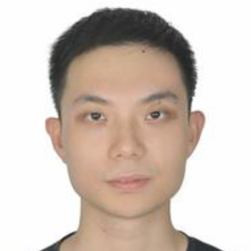

Current lab members
Yimin Zhao
Biostatistics, PhD (Independent study)
Working on: Branchpoint localization in development for single-cell sequencing data
Zhaoheng Li
Biostatistics, PhD (Independent study)
Working on: Multi-view manifolds in development for single-cell sequencing data

Haoye Yang
Statistics, Masters (Graduated)
Working on: Common & distinct embeddings via variational autoencoders for CITE-seq data
Shizhao (Joshua) Yang
Biostatistics, Masters
Working on: Deep-learning embedding for static lineage barcoded single-cell RNA-seq data
Wenbin (Derek) Wu
Statistics, Masters
Working on: Regulatory networks in mother-daughter mitosis relationships for live-cell imaging data
Wenjing (Tati) Zhang
Biostatistics, Masters
Working on: Subject-level differential expression testing for cohort-wide single-cell RNA-seq data
Yuhong Li
Biostatistics, Masters
Working on: RNA velocity uncertainty quantification for single-cell RNA-seq data